Nos souvenirs
Photos & vidéos
तस्वीरें
Belles rencontres au fil de nos voyages, école, paysages et musique : cliquez sur une photo pour l’agrandir.
Belles rencontres au fil de nos voyages

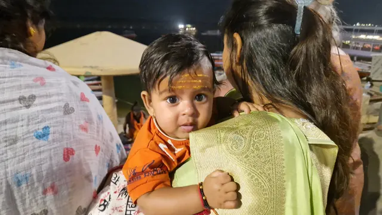

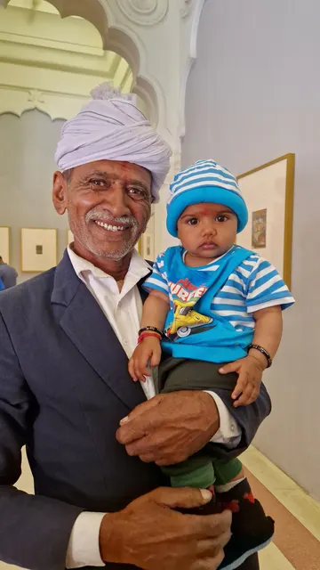

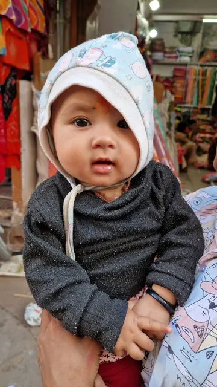

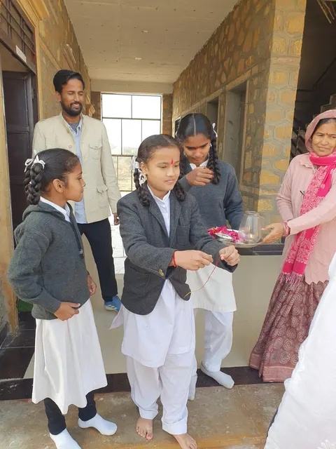

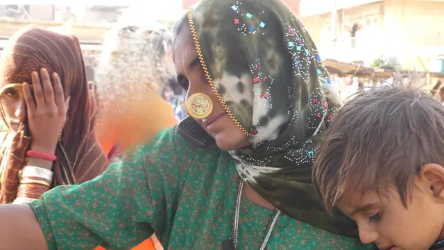

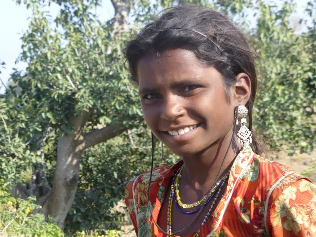

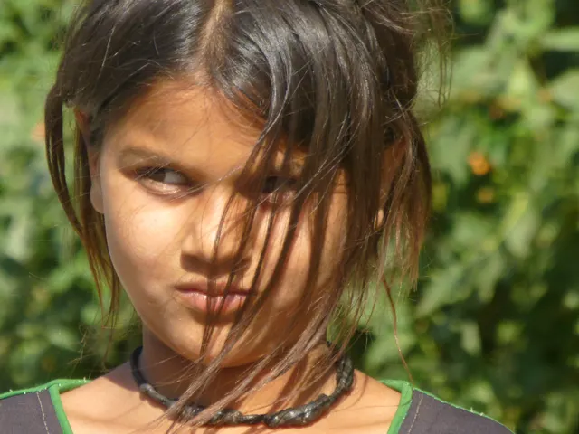

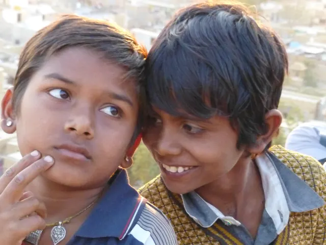

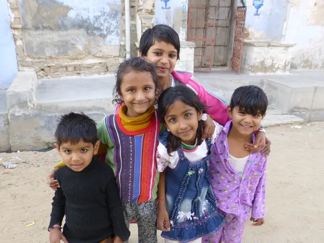

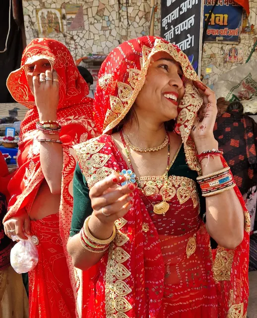

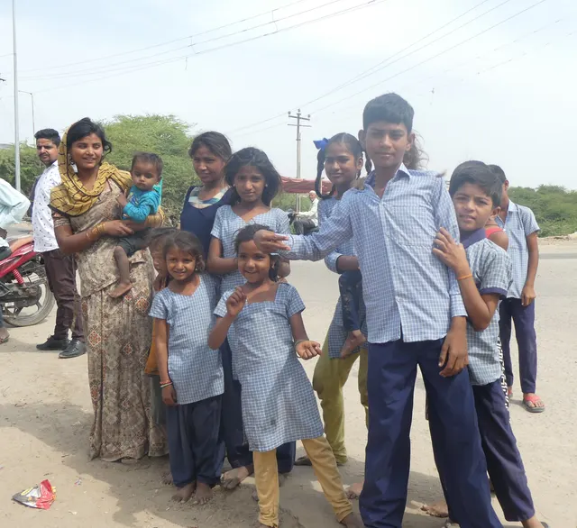

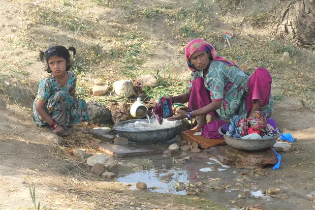

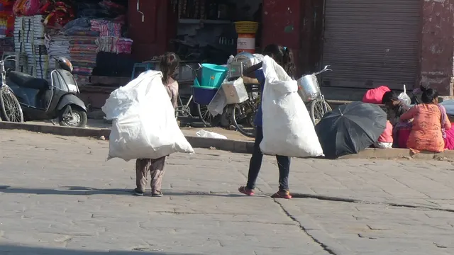

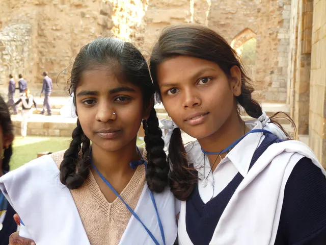

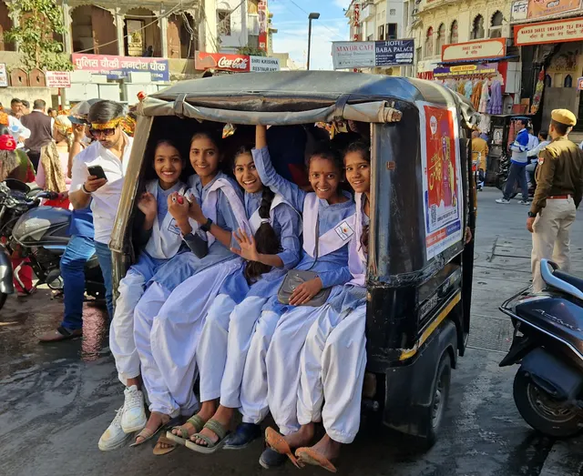


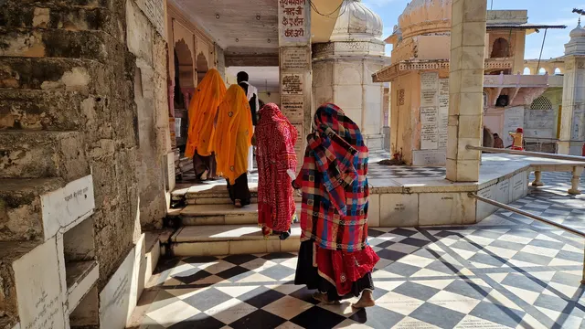

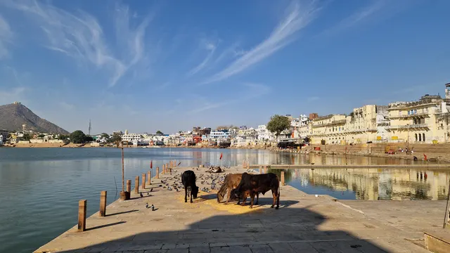

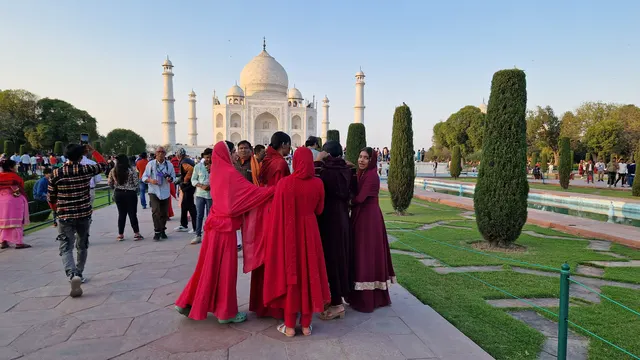


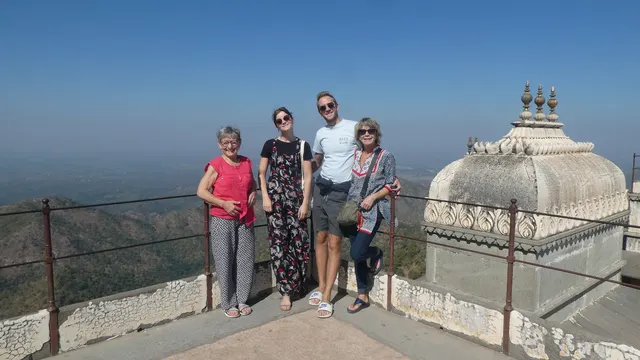

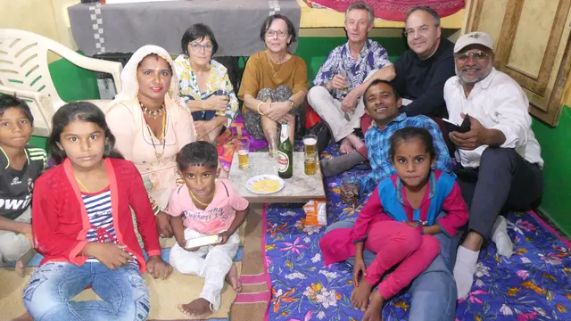

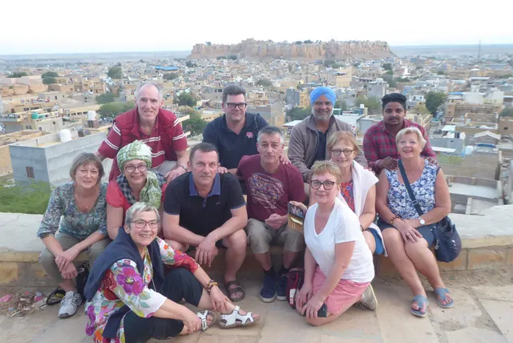

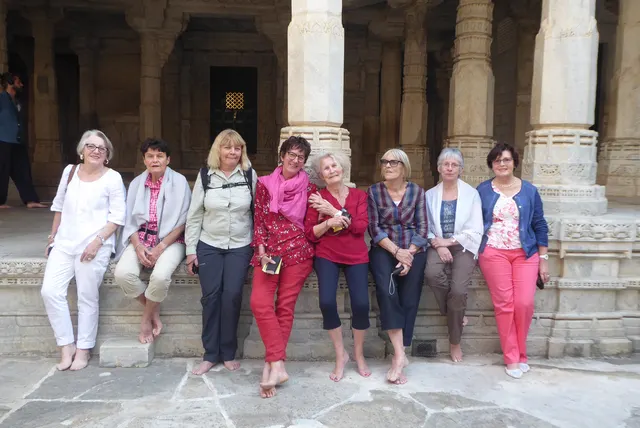

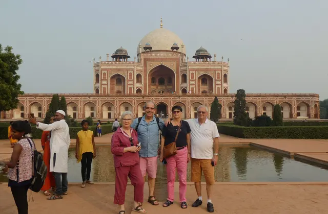

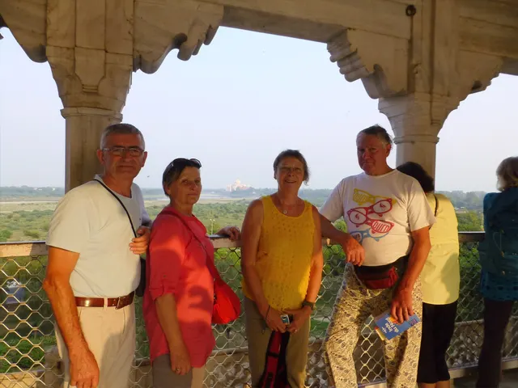

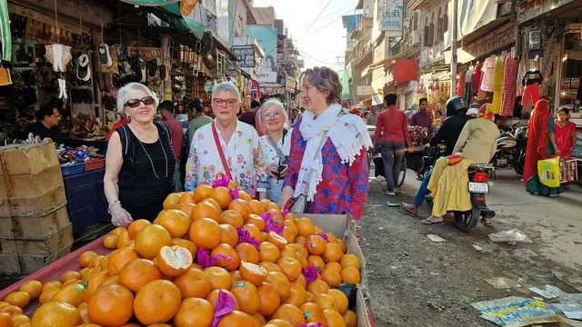

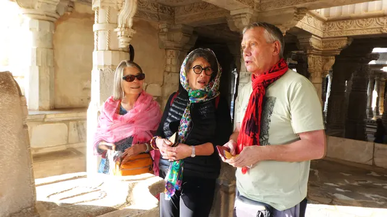

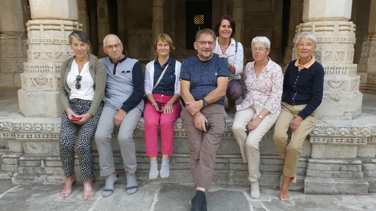

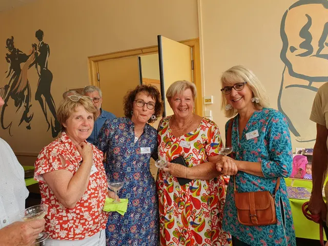

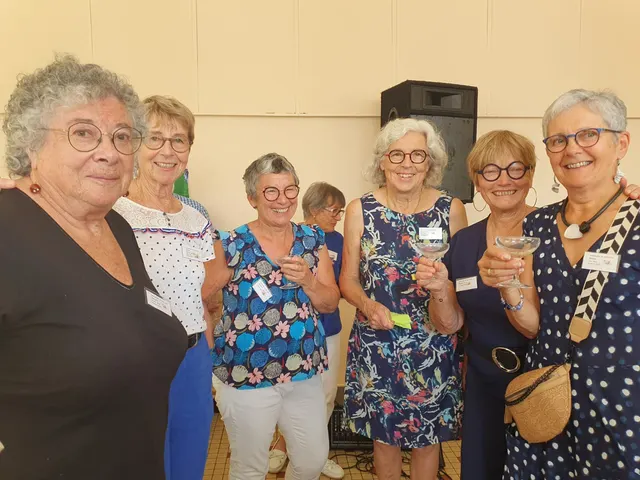

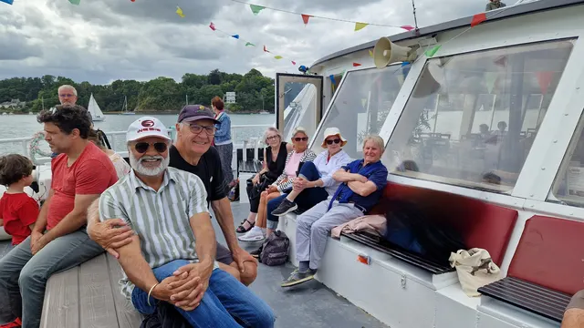

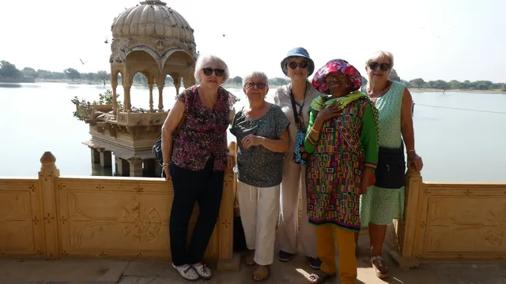
Photo à venir
Photo à venir
Photo à venir


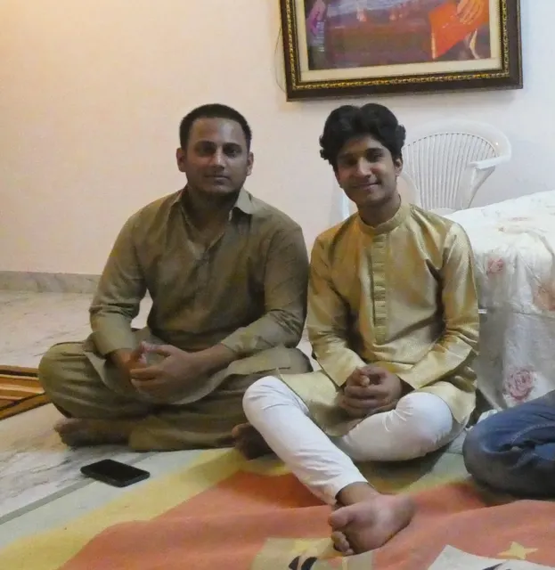

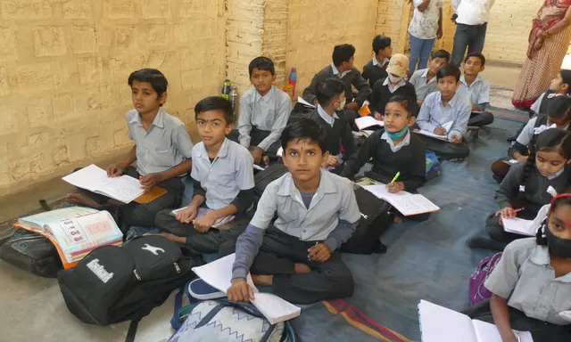
En mouvement
Vidéos
Vidéo à venir — l’accueil à l’école de Jaisalmer (filmée en décembre)
Cette vidéo du site d’origine n’est plus téléchargeable ; elle sera remise en ligne dès que possible.